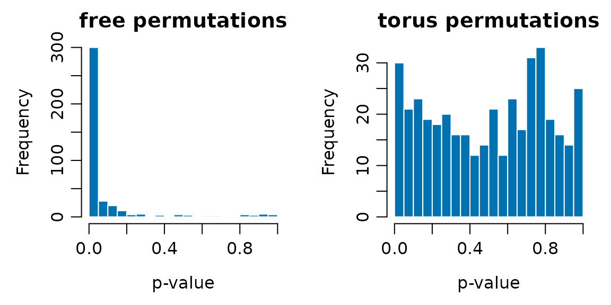

Evaluating a method with simulated metacommunities
Source:vignettes/evaluating-methods.Rmd
evaluating-methods.RmdA statistical method for community data should be evaluated on data where the truth is known. Simulations give that truth: they let us measure how often a test rejects a null hypothesis that is true (type I error) and how often it rejects one that is false (power). This vignette shows the workflow with a simple question: does a permutation test of the association between community composition and a predictor keep its nominal error rate in a spatially structured metacommunity?
The simulations take a few minutes, so the results were computed in
advance and are loaded below. The complete script is data-raw/vignette_method.R.
The same steps apply to any other method: replace the function in step
2.
Step 1: simulate data with a known truth
We simulate metacommunities on a 10 x 10 torus with an autocorrelated environment and limited dispersal. Besides the environment that drives the community, we draw a second predictor with the same autocorrelation but no relation to the community. Testing the true environment measures power; testing the unrelated predictor measures the type I error.
library(comdynamite)
side <- 10
tree <- ape::rcoal(30)
land <- landscape_grid(side, env_bandwidth = 2, disp_scale = 2)
unrelated <- landscape_grid(side, env_bandwidth = 2)$env
traits <- species_traits(tree, lambda = 1, sigma_mean = 8, sigma_sd = 2)
alpha <- competition_matrix(tree, "none")
sim <- simulate_metacommunity(land, traits, alpha, dispersal = 0.05, n_steps = 500)Keeping the tree and landscape fixed across scenarios within a
replicate pairs the comparisons, as here for lambda = 0 and
lambda = 1.
Step 2: write the method as a function
The method under evaluation is the proportion of variation in Hellinger- transformed abundances (Legendre & Gallagher 2001) explained by one predictor, as in a redundancy analysis, with a permutation test.
Step 3: define the alternatives to compare
We compare two null models. Free permutations treat sites as
exchangeable. torus_permutations() keeps the distances
among sites, and thus the autocorrelation of the predictor.
Step 4: replicate and summarise
Repeating steps 1 to 3 gives one p-value per replicate and scenario. The rejection rate at the 5% level estimates the type I error for the unrelated predictor and the power for the true environment. With 200 replicates, the standard error of a rate near 0.05 is about 0.015.
results <- readRDS("evaluating-methods.rds")
rates <- aggregate(p ~ predictor + null_model + lambda, data = results,
FUN = function(p) mean(p <= 0.05))
names(rates)[names(rates) == "p"] <- "rejection_rate"
rates$se <- sqrt(rates$rejection_rate * (1 - rates$rejection_rate) / 200)
knitr::kable(rates, digits = 3)| predictor | null_model | lambda | rejection_rate | se |
|---|---|---|---|---|
| environment | free | 0 | 1.000 | 0.000 |
| unrelated | free | 0 | 0.735 | 0.031 |
| environment | torus | 0 | 1.000 | 0.000 |
| unrelated | torus | 0 | 0.050 | 0.015 |
| environment | free | 1 | 1.000 | 0.000 |
| unrelated | free | 1 | 0.760 | 0.030 |
| environment | torus | 1 | 1.000 | 0.000 |
| unrelated | torus | 1 | 0.035 | 0.013 |
Under a true null hypothesis, p-values should be uniform:
h <- results[results$predictor == "unrelated", ]
old <- par(mfrow = c(1, 2), mar = c(4, 4, 2, 1), mgp = c(2.4, 0.7, 0))
for (n in c("free", "torus")) {
hist(h$p[h$null_model == n], breaks = seq(0, 1, 0.05), col = "#0072B2",
border = "white", main = paste(n, "permutations"), xlab = "p-value")
}
par(old)What the evaluation shows
Free permutations are not valid here. They reject a true null hypothesis in about 75% of replicates, 15 times the nominal rate. Both the community and the unrelated predictor are spatially autocorrelated, so they tend to match by chance, and permuting sites freely breaks this structure in the null distribution but not in the observed statistic (Legendre 1993).
Torus permutations keep the nominal level. Their rejection rates (0.035 and 0.050) are consistent with 5%, and their p-values are close to uniform.
This setting does not discriminate power. Both null models reject the true environment in all replicates, because the effect is strong. Power cannot be compared here, and it would not be meaningful for free permutations, whose error rate is not controlled. A study of power would need weaker effects, for example broader niches, higher dispersal or fewer sites.
The phylogenetic signal makes no difference to this
test, as expected, because the statistic does not use the tree.
The lambda factor is included to show how scenarios enter
the design. It would matter for a method that uses phylogenetic
information.
Adapting the workflow
- Replace
r2_env()with your statistic, and the predictors with the hypotheses of your method. - Add scenarios by varying dispersal, niche breadth or the type of competition, and report the rejection rate for each.
- Set the number of replicates from the precision you need: the
standard error of a rejection rate
pissqrt(p * (1 - p) / n_rep). - Check that the simulated communities are realistic for your question, for example in local richness and occupancy, before interpreting rejection rates.
Tree shape as a factor of the design
The results above use coalescent trees from
ape::rcoal(), and the statistic ignores the tree, so tree
shape cannot affect them. For a method that uses phylogenetic
information, tree shape should be part of the design. The treeshapesim package
simulates trees in which imbalance (beta) and branching
times (c) are set separately.
set.seed(1)
shapes <- expand.grid(beta = c(-1, 0), c = c(-0.5, 0))
measured <- t(mapply(function(beta, c) {
trees <- treeshapesim::sim_tree_shape(30, beta = beta, c = c, nsim = 100)
rowMeans(sapply(trees, treeshapesim::tree_shape))
}, shapes$beta, shapes$c))
knitr::kable(cbind(shapes, measured), digits = 2)| beta | c | gamma | colless |
|---|---|---|---|
| -1 | -0.5 | -1.61 | 1.40 |
| 0 | -0.5 | -1.58 | -0.02 |
| -1 | 0.0 | 0.00 | 1.22 |
| 0 | 0.0 | -0.01 | 0.14 |
The table gives the mean gamma statistic and normalized Colless index
of 100 trees for each combination. Each tree is a phylo
object, so it replaces ape::rcoal() in step 1 without other
changes. To aim at given values of gamma and Colless, use
shape_grid() and sim_tree_target() from the
same package.
torus_permutations() requires a landscape on a torus,
which is a property of the simulation. Empirical landscapes have edges,
so a valid restricted null model for real data must be chosen
separately. The rates above also apply only to the parameters used
here.
References
Legendre, P. (1993). Spatial autocorrelation: trouble or new paradigm? Ecology, 74, 1659–1673. https://doi.org/10.2307/1939924
Legendre, P., & Gallagher, E. D. (2001). Ecologically meaningful transformations for ordination of species data. Oecologia, 129, 271–280. https://doi.org/10.1007/s004420100716